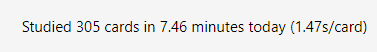
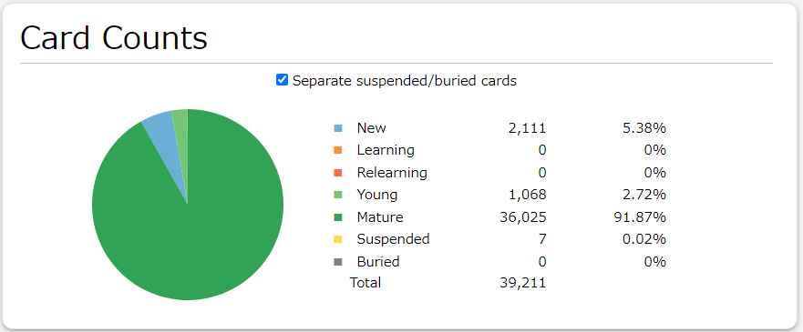

Personal Results
After a year of testing on my Japanese deck from December 2023 with ~30,000 cards learned to December 2024 with ~37,000 cards learned, using Anki SRS Kai over Anki SM-2 has increased my monthly mature (cards with an interval greater than or equal to 21) retention rate from 80.7% to 88%, monthly supermature (cards with an interval greater than or equal to 100) retention from 81.8% to 88.6%, and reduced my daily workload by almost 17%, from ~350 cards to review to ~300 cards to review each day.
Optimizing my deck with FSRS 4.5 produced the following parameters
w = [3.0764, 4.0925, 6.2791, 10.5132, 5.0603, 0.8525, 0.7931, 0.0993, 0.8338,
0.1, 0.9419, 2.0364, 0.1718, 0.4441, 1.3824, 0.0001, 3.9998]
which have later been converted to SM-2 parameters in the custom scheduler code below.
Previous Anki Settings
Daily Limits
- New cards/day: 20
- Maximum reviews/day: 9999
- New cards ignore review limit: off
- Limits start from top: off
New Cards
- Learning steps: 1m 10m 1h
- Graduating interval: 1
- Easy interval: 4
- Insertion order: Sequential (oldest cards first)
Lapses
- Relearning steps: 10m 1h
- Minimum interval: 1
- Leech threshold: 4
- Leech action: Suspend Card
Display Order
- New card gather order: Descending position
- New card sort order: Card type, then order gathered
- New/review order: Show before reviews
- Interday learning/review order: Mix with reviews
- Review sort order: Due date, then random
FSRS
- FSRS: off
Burying
- Bury new siblings: off
- Bury review siblings: off
- Bury interday learning siblings: off
Advanced
- Maximum interval: 1825
- Starting ease: 2.50
- Easy bonus: 1.30
- Interval modifier: 1.00
- Hard interval: 1.20
- New interval: 0.00
- Custom scheduling: empty
New Anki Settings
Daily Limits
- New cards/day: 20
- Maximum reviews/day: 9999
- New cards ignore review limit: off
- Limits start from top: off
New Cards
- Learning steps: 1m 10m 1h
- Graduating interval: 4
- Easy interval: 4
- Insertion order: Sequential (oldest cards first)
Lapses
- Relearning steps: 10m 1h
- Minimum interval: 3
- Leech threshold: 4
- Leech action: Suspend Card
Display Order
- New card gather order: Descending position
- New card sort order: Card type, then order gathered
- New/review order: Show before reviews
- Interday learning/review order: Mix with reviews
- Review sort order: Due date, then random
FSRS
- FSRS: off
Burying
- Bury new siblings: off
- Bury review siblings: off
- Bury interday learning siblings: off
Advanced
- Maximum interval: 1825
- Starting ease: 2.50
- Easy bonus: 1.30
- Interval modifier: 1.00
- Hard interval: 1.20
- New interval: 0.00
- Custom scheduling:
const deckOptions = {
"日本語": {
easeReward: {
minimumConsecutiveSuccessfulReviewsRequiredForReward: 3,
baseEaseReward: 0.05,
stepEaseReward: 0.05,
minimumEase: 1.30,
maximumEase: 2.50,
},
scheduler: {
enableFuzz: true,
maximumInterval: 1825,
intervalModifier: 1.00,
calculateHardMultiplier: (currentEaseFactor, currentInterval) => {
return 0.0;
},
calculateGoodMultiplier: (currentEaseFactor, currentInterval) => {
return currentEaseFactor / Math.pow(currentInterval,
0.059729712);
},
calculateEasyMultiplier: (currentEaseFactor, currentInterval) => {
return 0.0;
},
},
},
"Global Settings": {
easeReward: {
minimumConsecutiveSuccessfulReviewsRequiredForReward: 3,
baseEaseReward: 0.05,
stepEaseReward: 0.05,
minimumEase: 1.30,
maximumEase: 2.50,
},
scheduler: {
enableFuzz: true,
maximumInterval: 1825,
intervalModifier: 1.00,
// Approximation of the default FSRS v4 parameters
// [0.27, 0.74, 1.3, 5.52, 5.1, 1.02, 0.78, 0.06, 1.57, 0.14, 0.94, 2.16, 0.06, 0.31, 1.34, 0.21, 2.69]
calculateHardMultiplier: (currentEaseFactor, currentInterval) => {
return 0.0;
},
calculateGoodMultiplier: (currentEaseFactor, currentInterval) => {
return (currentEaseFactor / Math.pow(currentInterval,
0.024210328));
},
calculateEasyMultiplier: (currentEaseFactor, currentInterval) => {
return 0.0;
},
},
},
};
// Anki SRS Kai code below
// ...
Statistics
The image below is my retention rate using Anki SM-2.

The image below is my retention rate using Anki SRS Kai.


